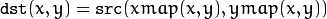
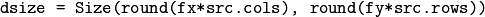
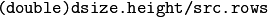
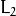
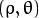
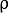
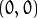
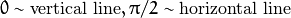

Image Processing¶
gpu::meanShiftFiltering¶
Performs mean-shift filtering for each point of the source image.
- C++: void gpu::meanShiftFiltering(const GpuMat& src, GpuMat& dst, int sp, int sr, TermCriteria criteria=TermCriteria(TermCriteria::MAX_ITER + TermCriteria::EPS, 5, 1), Stream& stream=Stream::Null() )¶
Parameters: - src – Source image. Only CV_8UC4 images are supported for now.
- dst – Destination image containing the color of mapped points. It has the same size and type as src .
- sp – Spatial window radius.
- sr – Color window radius.
- criteria – Termination criteria. See TermCriteria.
It maps each point of the source image into another point. As a result, you have a new color and new position of each point.
gpu::meanShiftProc¶
Performs a mean-shift procedure and stores information about processed points (their colors and positions) in two images.
- C++: void gpu::meanShiftProc(const GpuMat& src, GpuMat& dstr, GpuMat& dstsp, int sp, int sr, TermCriteria criteria=TermCriteria(TermCriteria::MAX_ITER + TermCriteria::EPS, 5, 1), Stream& stream=Stream::Null() )¶
Parameters: - src – Source image. Only CV_8UC4 images are supported for now.
- dstr – Destination image containing the color of mapped points. The size and type is the same as src .
- dstsp – Destination image containing the position of mapped points. The size is the same as src size. The type is CV_16SC2 .
- sp – Spatial window radius.
- sr – Color window radius.
- criteria – Termination criteria. See TermCriteria.
See also
gpu::meanShiftSegmentation¶
Performs a mean-shift segmentation of the source image and eliminates small segments.
- C++: void gpu::meanShiftSegmentation(const GpuMat& src, Mat& dst, int sp, int sr, int minsize, TermCriteria criteria=TermCriteria(TermCriteria::MAX_ITER + TermCriteria::EPS, 5, 1))¶
Parameters: - src – Source image. Only CV_8UC4 images are supported for now.
- dst – Segmented image with the same size and type as src .
- sp – Spatial window radius.
- sr – Color window radius.
- minsize – Minimum segment size. Smaller segments are merged.
- criteria – Termination criteria. See TermCriteria.
gpu::integral¶
Computes an integral image.
- C++: void gpu::integral(const GpuMat& src, GpuMat& sum, Stream& stream=Stream::Null())¶
Parameters: - src – Source image. Only CV_8UC1 images are supported for now.
- sum – Integral image containing 32-bit unsigned integer values packed into CV_32SC1 .
- stream – Stream for the asynchronous version.
See also
gpu::sqrIntegral¶
Computes a squared integral image.
- C++: void gpu::sqrIntegral(const GpuMat& src, GpuMat& sqsum, Stream& stream=Stream::Null())¶
Parameters: - src – Source image. Only CV_8UC1 images are supported for now.
- sqsum – Squared integral image containing 64-bit unsigned integer values packed into CV_64FC1 .
- stream – Stream for the asynchronous version.
gpu::columnSum¶
Computes a vertical (column) sum.
- C++: void gpu::columnSum(const GpuMat& src, GpuMat& sum)¶
Parameters: - src – Source image. Only CV_32FC1 images are supported for now.
- sum – Destination image of the CV_32FC1 type.
gpu::cornerHarris¶
Computes the Harris cornerness criteria at each image pixel.
- C++: void gpu::cornerHarris(const GpuMat& src, GpuMat& dst, int blockSize, int ksize, double k, int borderType=BORDER_REFLECT101)¶
Parameters: - src – Source image. Only CV_8UC1 and CV_32FC1 images are supported for now.
- dst – Destination image containing cornerness values. It has the same size as src and CV_32FC1 type.
- blockSize – Neighborhood size.
- ksize – Aperture parameter for the Sobel operator.
- k – Harris detector free parameter.
- borderType – Pixel extrapolation method. Only BORDER_REFLECT101 and BORDER_REPLICATE are supported for now.
See also
gpu::cornerMinEigenVal¶
Computes the minimum eigen value of a 2x2 derivative covariation matrix at each pixel (the cornerness criteria).
- C++: void gpu::cornerMinEigenVal(const GpuMat& src, GpuMat& dst, int blockSize, int ksize, int borderType=BORDER_REFLECT101)¶
- C++: void gpu::cornerMinEigenVal(const GpuMat& src, GpuMat& dst, GpuMat& Dx, GpuMat& Dy, int blockSize, int ksize, int borderType=BORDER_REFLECT101)¶
- C++: void gpu::cornerMinEigenVal(const GpuMat& src, GpuMat& dst, GpuMat& Dx, GpuMat& Dy, GpuMat& buf, int blockSize, int ksize, int borderType=BORDER_REFLECT101, Stream& stream=Stream::Null())¶
Parameters: - src – Source image. Only CV_8UC1 and CV_32FC1 images are supported for now.
- dst – Destination image containing cornerness values. The size is the same. The type is CV_32FC1 .
- blockSize – Neighborhood size.
- ksize – Aperture parameter for the Sobel operator.
- borderType – Pixel extrapolation method. Only BORDER_REFLECT101 and BORDER_REPLICATE are supported for now.
See also
gpu::mulSpectrums¶
Performs a per-element multiplication of two Fourier spectrums.
- C++: void gpu::mulSpectrums(const GpuMat& a, const GpuMat& b, GpuMat& c, int flags, bool conjB=false, Stream& stream=Stream::Null() )¶
Parameters: - a – First spectrum.
- b – Second spectrum with the same size and type as a .
- c – Destination spectrum.
- flags – Mock parameter used for CPU/GPU interfaces similarity.
- conjB – Optional flag to specify if the second spectrum needs to be conjugated before the multiplication.
Only full (not packed) CV_32FC2 complex spectrums in the interleaved format are supported for now.
See also
gpu::mulAndScaleSpectrums¶
Performs a per-element multiplication of two Fourier spectrums and scales the result.
- C++: void gpu::mulAndScaleSpectrums(const GpuMat& a, const GpuMat& b, GpuMat& c, int flags, float scale, bool conjB=false, Stream& stream=Stream::Null() )¶
Parameters: - a – First spectrum.
- b – Second spectrum with the same size and type as a .
- c – Destination spectrum.
- flags – Mock parameter used for CPU/GPU interfaces similarity.
- scale – Scale constant.
- conjB – Optional flag to specify if the second spectrum needs to be conjugated before the multiplication.
Only full (not packed) CV_32FC2 complex spectrums in the interleaved format are supported for now.
See also
gpu::dft¶
Performs a forward or inverse discrete Fourier transform (1D or 2D) of the floating point matrix.
- C++: void gpu::dft(const GpuMat& src, GpuMat& dst, Size dft_size, int flags=0, Stream& stream=Stream::Null() )¶
Parameters: - src – Source matrix (real or complex).
- dst – Destination matrix (real or complex).
- dft_size – Size of a discrete Fourier transform.
- flags –
Optional flags:
- DFT_ROWS transforms each individual row of the source matrix.
- DFT_SCALE scales the result: divide it by the number of elements in the transform (obtained from dft_size ).
- DFT_INVERSE inverts DFT. Use for complex-complex cases (real-complex and complex-real cases are always forward and inverse, respectively).
- DFT_REAL_OUTPUT specifies the output as real. The source matrix is the result of real-complex transform, so the destination matrix must be real.
Use to handle real matrices ( CV32FC1 ) and complex matrices in the interleaved format ( CV32FC2 ).
The source matrix should be continuous, otherwise reallocation and data copying is performed. The function chooses an operation mode depending on the flags, size, and channel count of the source matrix:
- If the source matrix is complex and the output is not specified as real, the destination matrix is complex and has the dft_size size and CV_32FC2 type. The destination matrix contains a full result of the DFT (forward or inverse).
- If the source matrix is complex and the output is specified as real, the function assumes that its input is the result of the forward transform (see the next item). The destination matrix has the dft_size size and CV_32FC1 type. It contains the result of the inverse DFT.
- If the source matrix is real (its type is CV_32FC1 ), forward DFT is performed. The result of the DFT is packed into complex ( CV_32FC2 ) matrix. So, the width of the destination matrix is dft_size.width / 2 + 1 . But if the source is a single column, the height is reduced instead of the width.
See also
gpu::ConvolveBuf¶
- struct gpu::ConvolveBuf¶
Class providing a memory buffer for gpu::convolve() function, plus it allows to adjust some specific parameters.
struct CV_EXPORTS ConvolveBuf
{
Size result_size;
Size block_size;
Size user_block_size;
Size dft_size;
int spect_len;
GpuMat image_spect, templ_spect, result_spect;
GpuMat image_block, templ_block, result_data;
void create(Size image_size, Size templ_size);
static Size estimateBlockSize(Size result_size, Size templ_size);
};
You can use field user_block_size to set specific block size for gpu::convolve() function. If you leave its default value Size(0,0) then automatic estimation of block size will be used (which is optimized for speed). By varying user_block_size you can reduce memory requirements at the cost of speed.
gpu::ConvolveBuf::create¶
- C++: gpu::ConvolveBuf::create(Size image_size, Size templ_size)¶
Constructs a buffer for gpu::convolve() function with respective arguments.
gpu::convolve¶
Computes a convolution (or cross-correlation) of two images.
- C++: void gpu::convolve(const GpuMat& image, const GpuMat& templ, GpuMat& result, bool ccorr=false)¶
- C++: void gpu::convolve(const GpuMat& image, const GpuMat& templ, GpuMat& result, bool ccorr, ConvolveBuf& buf, Stream& stream=Stream::Null() )¶
Parameters: - image – Source image. Only CV_32FC1 images are supported for now.
- templ – Template image. The size is not greater than the image size. The type is the same as image .
- result – Result image. If image is W x H and templ is w x h, then result must be W-w+1 x H-h+1.
- ccorr – Flags to evaluate cross-correlation instead of convolution.
- buf – Optional buffer to avoid extra memory allocations and to adjust some specific parameters. See gpu::ConvolveBuf.
- stream – Stream for the asynchronous version.
See also
gpu::MatchTemplateBuf¶
- struct gpu::MatchTemplateBuf¶
Class providing memory buffers for gpu::matchTemplate() function, plus it allows to adjust some specific parameters.
struct CV_EXPORTS MatchTemplateBuf
{
Size user_block_size;
GpuMat imagef, templf;
std::vector<GpuMat> images;
std::vector<GpuMat> image_sums;
std::vector<GpuMat> image_sqsums;
};
You can use field user_block_size to set specific block size for gpu::matchTemplate() function. If you leave its default value Size(0,0) then automatic estimation of block size will be used (which is optimized for speed). By varying user_block_size you can reduce memory requirements at the cost of speed.
gpu::matchTemplate¶
Computes a proximity map for a raster template and an image where the template is searched for.
- C++: void gpu::matchTemplate(const GpuMat& image, const GpuMat& templ, GpuMat& result, int method, Stream& stream=Stream::Null())¶
- C++: void gpu::matchTemplate(const GpuMat& image, const GpuMat& templ, GpuMat& result, int method, MatchTemplateBuf& buf, Stream& stream=Stream::Null())¶
Parameters: - image – Source image. CV_32F and CV_8U depth images (1..4 channels) are supported for now.
- templ – Template image with the size and type the same as image .
- result – Map containing comparison results ( CV_32FC1 ). If image is W x H and templ is w x h, then result must be W-w+1 x H-h+1.
- method – Specifies the way to compare the template with the image.
- buf – Optional buffer to avoid extra memory allocations and to adjust some specific parameters. See gpu::MatchTemplateBuf.
- stream – Stream for the asynchronous version.
The following methods are supported for the CV_8U depth images for now:
- CV_TM_SQDIFF
- CV_TM_SQDIFF_NORMED
- CV_TM_CCORR
- CV_TM_CCORR_NORMED
- CV_TM_CCOEFF
- CV_TM_CCOEFF_NORMED
The following methods are supported for the CV_32F images for now:
- CV_TM_SQDIFF
- CV_TM_CCORR
See also
gpu::remap¶
Applies a generic geometrical transformation to an image.
- C++: void gpu::remap(const GpuMat& src, GpuMat& dst, const GpuMat& xmap, const GpuMat& ymap, int interpolation, int borderMode=BORDER_CONSTANT, Scalar borderValue=Scalar(), Stream& stream=Stream::Null() )¶
Parameters: - src – Source image.
- dst – Destination image with the size the same as xmap and the type the same as src .
- xmap – X values. Only CV_32FC1 type is supported.
- ymap – Y values. Only CV_32FC1 type is supported.
- interpolation – Interpolation method (see resize() ). INTER_NEAREST , INTER_LINEAR and INTER_CUBIC are supported for now.
- borderMode – Pixel extrapolation method (see borderInterpolate() ). BORDER_REFLECT101 , BORDER_REPLICATE , BORDER_CONSTANT , BORDER_REFLECT and BORDER_WRAP are supported for now.
- borderValue – Value used in case of a constant border. By default, it is 0.
- stream – Stream for the asynchronous version.
The function transforms the source image using the specified map:

Values of pixels with non-integer coordinates are computed using the bilinear interpolation.
See also
gpu::cvtColor¶
Converts an image from one color space to another.
- C++: void gpu::cvtColor(const GpuMat& src, GpuMat& dst, int code, int dcn=0, Stream& stream=Stream::Null())¶
Parameters: - src – Source image with CV_8U , CV_16U , or CV_32F depth and 1, 3, or 4 channels.
- dst – Destination image with the same size and depth as src .
- code – Color space conversion code. For details, see cvtColor() . Conversion to/from Luv and Bayer color spaces is not supported.
- dcn – Number of channels in the destination image. If the parameter is 0, the number of the channels is derived automatically from src and the code .
- stream – Stream for the asynchronous version.
3-channel color spaces (like HSV, XYZ, and so on) can be stored in a 4-channel image for better performance.
See also
gpu::swapChannels¶
Exchanges the color channels of an image in-place.
- C++: void gpu::swapChannels(GpuMat& image, const int dstOrder[4], Stream& stream=Stream::Null())¶
Parameters: - image – Source image. Supports only CV_8UC4 type.
- dstOrder – Integer array describing how channel values are permutated. The n-th entry of the array contains the number of the channel that is stored in the n-th channel of the output image. E.g. Given an RGBA image, aDstOrder = [3,2,1,0] converts this to ABGR channel order.
- stream – Stream for the asynchronous version.
The methods support arbitrary permutations of the original channels, including replication.
gpu::threshold¶
Applies a fixed-level threshold to each array element.
- C++: double gpu::threshold(const GpuMat& src, GpuMat& dst, double thresh, double maxval, int type, Stream& stream=Stream::Null())¶
Parameters: - src – Source array (single-channel).
- dst – Destination array with the same size and type as src .
- thresh – Threshold value.
- maxval – Maximum value to use with THRESH_BINARY and THRESH_BINARY_INV threshold types.
- type – Threshold type. For details, see threshold() . The THRESH_OTSU threshold type is not supported.
- stream – Stream for the asynchronous version.
See also
gpu::resize¶
Resizes an image.
- C++: void gpu::resize(const GpuMat& src, GpuMat& dst, Size dsize, double fx=0, double fy=0, int interpolation=INTER_LINEAR, Stream& stream=Stream::Null())¶
Parameters: - src – Source image.
- dst – Destination image with the same type as src . The size is dsize (when it is non-zero) or the size is computed from src.size() , fx , and fy .
- dsize –
Destination image size. If it is zero, it is computed as:

Either dsize or both fx and fy must be non-zero.
- fx –
Scale factor along the horizontal axis. If it is zero, it is computed as:

- fy –
Scale factor along the vertical axis. If it is zero, it is computed as:

- interpolation – Interpolation method. INTER_NEAREST , INTER_LINEAR and INTER_CUBIC are supported for now.
- stream – Stream for the asynchronous version.
See also
gpu::warpAffine¶
Applies an affine transformation to an image.
- C++: void gpu::warpAffine(const GpuMat& src, GpuMat& dst, const Mat& M, Size dsize, int flags=INTER_LINEAR, int borderMode=BORDER_CONSTANT, Scalar borderValue=Scalar(), Stream& stream=Stream::Null() )¶
Parameters: - src – Source image. CV_8U , CV_16U , CV_32S , or CV_32F depth and 1, 3, or 4 channels are supported.
- dst – Destination image with the same type as src . The size is dsize .
- M – 2x3 transformation matrix.
- dsize – Size of the destination image.
- flags – Combination of interpolation methods (see resize()) and the optional flag WARP_INVERSE_MAP specifying that M is an inverse transformation ( dst=>src ). Only INTER_NEAREST , INTER_LINEAR , and INTER_CUBIC interpolation methods are supported.
- stream – Stream for the asynchronous version.
See also
gpu::buildWarpAffineMaps¶
Builds transformation maps for affine transformation.
- C++: void gpu::buildWarpAffineMaps(const Mat& M, bool inverse, Size dsize, GpuMat& xmap, GpuMat& ymap, Stream& stream=Stream::Null())¶
Parameters: - M – 2x3 transformation matrix.
- inverse – Flag specifying that M is an inverse transformation ( dst=>src ).
- dsize – Size of the destination image.
- xmap – X values with CV_32FC1 type.
- ymap – Y values with CV_32FC1 type.
- stream – Stream for the asynchronous version.
See also
gpu::warpPerspective¶
Applies a perspective transformation to an image.
- C++: void gpu::warpPerspective(const GpuMat& src, GpuMat& dst, const Mat& M, Size dsize, int flags=INTER_LINEAR, int borderMode=BORDER_CONSTANT, Scalar borderValue=Scalar(), Stream& stream=Stream::Null() )¶
Parameters: - src – Source image. CV_8U , CV_16U , CV_32S , or CV_32F depth and 1, 3, or 4 channels are supported.
- dst – Destination image with the same type as src . The size is dsize .
- M – 3x3 transformation matrix.
- dsize – Size of the destination image.
- flags – Combination of interpolation methods (see resize() ) and the optional flag WARP_INVERSE_MAP specifying that M is the inverse transformation ( dst => src ). Only INTER_NEAREST , INTER_LINEAR , and INTER_CUBIC interpolation methods are supported.
- stream – Stream for the asynchronous version.
See also
gpu::buildWarpPerspectiveMaps¶
Builds transformation maps for perspective transformation.
- C++: void gpu::buildWarpAffineMaps(const Mat& M, bool inverse, Size dsize, GpuMat& xmap, GpuMat& ymap, Stream& stream=Stream::Null())
Parameters: - M – 3x3 transformation matrix.
- inverse – Flag specifying that M is an inverse transformation ( dst=>src ).
- dsize – Size of the destination image.
- xmap – X values with CV_32FC1 type.
- ymap – Y values with CV_32FC1 type.
- stream – Stream for the asynchronous version.
See also
gpu::rotate¶
Rotates an image around the origin (0,0) and then shifts it.
- C++: void gpu::rotate(const GpuMat& src, GpuMat& dst, Size dsize, double angle, double xShift=0, double yShift=0, int interpolation=INTER_LINEAR, Stream& stream=Stream::Null())¶
Parameters: - src – Source image. Supports 1, 3 or 4 channels images with CV_8U , CV_16U or CV_32F depth.
- dst – Destination image with the same type as src . The size is dsize .
- dsize – Size of the destination image.
- angle – Angle of rotation in degrees.
- xShift – Shift along the horizontal axis.
- yShift – Shift along the vertical axis.
- interpolation – Interpolation method. Only INTER_NEAREST , INTER_LINEAR , and INTER_CUBIC are supported.
- stream – Stream for the asynchronous version.
See also
gpu::copyMakeBorder¶
Forms a border around an image.
- C++: void gpu::copyMakeBorder(const GpuMat& src, GpuMat& dst, int top, int bottom, int left, int right, int borderType, const Scalar& value=Scalar(), Stream& stream=Stream::Null())¶
Parameters: - src – Source image. CV_8UC1 , CV_8UC4 , CV_32SC1 , and CV_32FC1 types are supported.
- dst – Destination image with the same type as src. The size is Size(src.cols+left+right, src.rows+top+bottom) .
- top –
- bottom –
- left –
- right – Number of pixels in each direction from the source image rectangle to extrapolate. For example: top=1, bottom=1, left=1, right=1 mean that 1 pixel-wide border needs to be built.
- borderType – Border type. See borderInterpolate() for details. BORDER_REFLECT101 , BORDER_REPLICATE , BORDER_CONSTANT , BORDER_REFLECT and BORDER_WRAP are supported for now.
- value – Border value.
- stream – Stream for the asynchronous version.
See also
gpu::rectStdDev¶
Computes a standard deviation of integral images.
- C++: void gpu::rectStdDev(const GpuMat& src, const GpuMat& sqr, GpuMat& dst, const Rect& rect, Stream& stream=Stream::Null())¶
Parameters: - src – Source image. Only the CV_32SC1 type is supported.
- sqr – Squared source image. Only the CV_32FC1 type is supported.
- dst – Destination image with the same type and size as src .
- rect – Rectangular window.
- stream – Stream for the asynchronous version.
gpu::evenLevels¶
Computes levels with even distribution.
- C++: void gpu::evenLevels(GpuMat& levels, int nLevels, int lowerLevel, int upperLevel)¶
Parameters: - levels – Destination array. levels has 1 row, nLevels columns, and the CV_32SC1 type.
- nLevels – Number of computed levels. nLevels must be at least 2.
- lowerLevel – Lower boundary value of the lowest level.
- upperLevel – Upper boundary value of the greatest level.
gpu::histEven¶
Calculates a histogram with evenly distributed bins.
- C++: void gpu::histEven(const GpuMat& src, GpuMat& hist, int histSize, int lowerLevel, int upperLevel, Stream& stream=Stream::Null())¶
- C++: void gpu::histEven(const GpuMat& src, GpuMat& hist, GpuMat& buf, int histSize, int lowerLevel, int upperLevel, Stream& stream=Stream::Null())¶
- C++: void gpu::histEven(const GpuMat& src, GpuMat hist[4], int histSize[4], int lowerLevel[4], int upperLevel[4], Stream& stream=Stream::Null() )¶
- C++: void gpu::histEven(const GpuMat& src, GpuMat hist[4], GpuMat& buf, int histSize[4], int lowerLevel[4], int upperLevel[4], Stream& stream=Stream::Null() )¶
Parameters: - src – Source image. CV_8U, CV_16U, or CV_16S depth and 1 or 4 channels are supported. For a four-channel image, all channels are processed separately.
- hist – Destination histogram with one row, histSize columns, and the CV_32S type.
- histSize – Size of the histogram.
- lowerLevel – Lower boundary of lowest-level bin.
- upperLevel – Upper boundary of highest-level bin.
- buf – Optional buffer to avoid extra memory allocations (for many calls with the same sizes).
- stream – Stream for the asynchronous version.
gpu::histRange¶
Calculates a histogram with bins determined by the levels array.
- C++: void gpu::histRange(const GpuMat& src, GpuMat& hist, const GpuMat& levels, Stream& stream=Stream::Null())¶
- C++: void gpu::histRange(const GpuMat& src, GpuMat& hist, const GpuMat& levels, GpuMat& buf, Stream& stream=Stream::Null())¶
Parameters: - src – Source image. CV_8U , CV_16U , or CV_16S depth and 1 or 4 channels are supported. For a four-channel image, all channels are processed separately.
- hist – Destination histogram with one row, (levels.cols-1) columns, and the CV_32SC1 type.
- levels – Number of levels in the histogram.
- buf – Optional buffer to avoid extra memory allocations (for many calls with the same sizes).
- stream – Stream for the asynchronous version.
gpu::calcHist¶
Calculates histogram for one channel 8-bit image.
- C++: void gpu::calcHist(const GpuMat& src, GpuMat& hist, Stream& stream=Stream::Null())¶
- C++: void gpu::calcHist(const GpuMat& src, GpuMat& hist, GpuMat& buf, Stream& stream=Stream::Null())¶
Parameters: - src – Source image.
- hist – Destination histogram with one row, 256 columns, and the CV_32SC1 type.
- buf – Optional buffer to avoid extra memory allocations (for many calls with the same sizes).
- stream – Stream for the asynchronous version.
gpu::equalizeHist¶
Equalizes the histogram of a grayscale image.
- C++: void gpu::equalizeHist(const GpuMat& src, GpuMat& dst, Stream& stream=Stream::Null())¶
- C++: void gpu::equalizeHist(const GpuMat& src, GpuMat& dst, GpuMat& hist, Stream& stream=Stream::Null())¶
- C++: void gpu::equalizeHist(const GpuMat& src, GpuMat& dst, GpuMat& hist, GpuMat& buf, Stream& stream=Stream::Null())¶
Parameters: - src – Source image.
- dst – Destination image.
- hist – Destination histogram with one row, 256 columns, and the CV_32SC1 type.
- buf – Optional buffer to avoid extra memory allocations (for many calls with the same sizes).
- stream – Stream for the asynchronous version.
See also
gpu::buildWarpPlaneMaps¶
Builds plane warping maps.
- C++: void gpu::buildWarpPlaneMaps(Size src_size, Rect dst_roi, const Mat& K, const Mat& R, const Mat& T, float scale, GpuMat& map_x, GpuMat& map_y, Stream& stream=Stream::Null() )¶
Parameters: - stream – Stream for the asynchronous version.
gpu::buildWarpCylindricalMaps¶
Builds cylindrical warping maps.
- C++: void gpu::buildWarpCylindricalMaps(Size src_size, Rect dst_roi, const Mat& K, const Mat& R, float scale, GpuMat& map_x, GpuMat& map_y, Stream& stream=Stream::Null() )¶
Parameters: - stream – Stream for the asynchronous version.
gpu::buildWarpSphericalMaps¶
Builds spherical warping maps.
- C++: void gpu::buildWarpSphericalMaps(Size src_size, Rect dst_roi, const Mat& K, const Mat& R, float scale, GpuMat& map_x, GpuMat& map_y, Stream& stream=Stream::Null() )¶
Parameters: - stream – Stream for the asynchronous version.
gpu::pyrDown¶
Smoothes an image and downsamples it.
- C++: void gpu::pyrDown(const GpuMat& src, GpuMat& dst, Stream& stream=Stream::Null())¶
Parameters: - src – Source image.
- dst – Destination image. Will have Size((src.cols+1)/2, (src.rows+1)/2) size and the same type as src .
- stream – Stream for the asynchronous version.
See also
gpu::pyrUp¶
Upsamples an image and then smoothes it.
- C++: void gpu::pyrUp(const GpuMat& src, GpuMat& dst, Stream& stream=Stream::Null())¶
Parameters: - src – Source image.
- dst – Destination image. Will have Size(src.cols*2, src.rows*2) size and the same type as src .
- stream – Stream for the asynchronous version.
See also
gpu::blendLinear¶
Performs linear blending of two images.
- C++: void gpu::blendLinear(const GpuMat& img1, const GpuMat& img2, const GpuMat& weights1, const GpuMat& weights2, GpuMat& result, Stream& stream=Stream::Null())¶
Parameters: - img1 – First image. Supports only CV_8U and CV_32F depth.
- img2 – Second image. Must have the same size and the same type as img1 .
- weights1 – Weights for first image. Must have tha same size as img1 . Supports only CV_32F type.
- weights2 – Weights for second image. Must have tha same size as img2 . Supports only CV_32F type.
- result – Destination image.
- stream – Stream for the asynchronous version.
gpu::bilateralFilter¶
Performs bilateral filtering of passed image
- C++: void gpu::bilateralFilter(const GpuMat& src, GpuMat& dst, int kernel_size, float sigma_color, float sigma_spatial, int borderMode=BORDER_DEFAULT, Stream& stream=Stream::Null() )¶
Parameters: - src – Source image. Supports only (channles != 2 && depth() != CV_8S && depth() != CV_32S && depth() != CV_64F).
- dst – Destination imagwe.
- kernel_size – Kernel window size.
- sigma_color – Filter sigma in the color space.
- sigma_spatial – Filter sigma in the coordinate space.
- borderMode – Border type. See borderInterpolate() for details. BORDER_REFLECT101 , BORDER_REPLICATE , BORDER_CONSTANT , BORDER_REFLECT and BORDER_WRAP are supported for now.
- stream – Stream for the asynchronous version.
See also
gpu::nonLocalMeans¶
Performs pure non local means denoising without any simplification, and thus it is not fast.
- C++: void gpu::nonLocalMeans(const GpuMat& src, GpuMat& dst, float h, int search_window=21, int block_size=7, int borderMode=BORDER_DEFAULT, Stream& s=Stream::Null())¶
Parameters: - src – Source image. Supports only CV_8UC1, CV_8UC2 and CV_8UC3.
- dst – Destination image.
- h – Filter sigma regulating filter strength for color.
- search_window – Size of search window.
- block_size – Size of block used for computing weights.
- borderMode – Border type. See borderInterpolate() for details. BORDER_REFLECT101 , BORDER_REPLICATE , BORDER_CONSTANT , BORDER_REFLECT and BORDER_WRAP are supported for now.
- stream – Stream for the asynchronous version.
See also
gpu::FastNonLocalMeansDenoising¶
- class gpu::FastNonLocalMeansDenoising¶
class FastNonLocalMeansDenoising { public: //! Simple method, recommended for grayscale images (though it supports multichannel images) void simpleMethod(const GpuMat& src, GpuMat& dst, float h, int search_window = 21, int block_size = 7, Stream& s = Stream::Null()) //! Processes luminance and color components separatelly void labMethod(const GpuMat& src, GpuMat& dst, float h_luminance, float h_color, int search_window = 21, int block_size = 7, Stream& s = Stream::Null()) };
The class implements fast approximate Non Local Means Denoising algorithm.
gpu::FastNonLocalMeansDenoising::simpleMethod()¶
Perform image denoising using Non-local Means Denoising algorithm http://www.ipol.im/pub/algo/bcm_non_local_means_denoising with several computational optimizations. Noise expected to be a gaussian white noise
- C++: void gpu::FastNonLocalMeansDenoising::simpleMethod(const GpuMat& src, GpuMat& dst, float h, int search_window=21, int block_size=7, Stream& s=Stream::Null())¶
Parameters: - src – Input 8-bit 1-channel, 2-channel or 3-channel image.
- dst – Output image with the same size and type as src .
- h – Parameter regulating filter strength. Big h value perfectly removes noise but also removes image details, smaller h value preserves details but also preserves some noise
- search_window – Size in pixels of the window that is used to compute weighted average for given pixel. Should be odd. Affect performance linearly: greater search_window - greater denoising time. Recommended value 21 pixels
- block_size – Size in pixels of the template patch that is used to compute weights. Should be odd. Recommended value 7 pixels
- stream – Stream for the asynchronous invocations.
This function expected to be applied to grayscale images. For colored images look at FastNonLocalMeansDenoising::labMethod.
See also
gpu::FastNonLocalMeansDenoising::labMethod()¶
Modification of FastNonLocalMeansDenoising::simpleMethod for color images
- C++: void gpu::FastNonLocalMeansDenoising::labMethod(const GpuMat& src, GpuMat& dst, float h_luminance, float h_color, int search_window=21, int block_size=7, Stream& s=Stream::Null())¶
Parameters: - src – Input 8-bit 3-channel image.
- dst – Output image with the same size and type as src .
- h_luminance – Parameter regulating filter strength. Big h value perfectly removes noise but also removes image details, smaller h value preserves details but also preserves some noise
- float – The same as h but for color components. For most images value equals 10 will be enought to remove colored noise and do not distort colors
- search_window – Size in pixels of the window that is used to compute weighted average for given pixel. Should be odd. Affect performance linearly: greater search_window - greater denoising time. Recommended value 21 pixels
- block_size – Size in pixels of the template patch that is used to compute weights. Should be odd. Recommended value 7 pixels
- stream – Stream for the asynchronous invocations.
The function converts image to CIELAB colorspace and then separately denoise L and AB components with given h parameters using FastNonLocalMeansDenoising::simpleMethod function.
See also
gpu::alphaComp¶
Composites two images using alpha opacity values contained in each image.
- C++: void gpu::alphaComp(const GpuMat& img1, const GpuMat& img2, GpuMat& dst, int alpha_op, Stream& stream=Stream::Null())¶
Parameters: - img1 – First image. Supports CV_8UC4 , CV_16UC4 , CV_32SC4 and CV_32FC4 types.
- img2 – Second image. Must have the same size and the same type as img1 .
- dst – Destination image.
- alpha_op –
Flag specifying the alpha-blending operation:
- ALPHA_OVER
- ALPHA_IN
- ALPHA_OUT
- ALPHA_ATOP
- ALPHA_XOR
- ALPHA_PLUS
- ALPHA_OVER_PREMUL
- ALPHA_IN_PREMUL
- ALPHA_OUT_PREMUL
- ALPHA_ATOP_PREMUL
- ALPHA_XOR_PREMUL
- ALPHA_PLUS_PREMUL
- ALPHA_PREMUL
- stream – Stream for the asynchronous version.
Note
- An example demonstrating the use of alphaComp can be found at opencv_source_code/samples/gpu/alpha_comp.cpp
gpu::Canny¶
Finds edges in an image using the [Canny86] algorithm.
- C++: void gpu::Canny(const GpuMat& image, GpuMat& edges, double low_thresh, double high_thresh, int apperture_size=3, bool L2gradient=false)¶
- C++: void gpu::Canny(const GpuMat& image, CannyBuf& buf, GpuMat& edges, double low_thresh, double high_thresh, int apperture_size=3, bool L2gradient=false)¶
- C++: void gpu::Canny(const GpuMat& dx, const GpuMat& dy, GpuMat& edges, double low_thresh, double high_thresh, bool L2gradient=false)¶
- C++: void gpu::Canny(const GpuMat& dx, const GpuMat& dy, CannyBuf& buf, GpuMat& edges, double low_thresh, double high_thresh, bool L2gradient=false)¶
Parameters: - image – Single-channel 8-bit input image.
- dx – First derivative of image in the vertical direction. Support only CV_32S type.
- dy – First derivative of image in the horizontal direction. Support only CV_32S type.
- edges – Output edge map. It has the same size and type as image .
- low_thresh – First threshold for the hysteresis procedure.
- high_thresh – Second threshold for the hysteresis procedure.
- apperture_size – Aperture size for the Sobel() operator.
- L2gradient – Flag indicating whether a more accurate  norm
 should be used to compute the image gradient magnitude ( L2gradient=true ), or a faster default
should be used to compute the image gradient magnitude ( L2gradient=true ), or a faster default  norm
norm  is enough ( L2gradient=false ).
is enough ( L2gradient=false ). - buf – Optional buffer to avoid extra memory allocations (for many calls with the same sizes).
See also
gpu::HoughLines¶
Finds lines in a binary image using the classical Hough transform.
- C++: void gpu::HoughLines(const GpuMat& src, GpuMat& lines, float rho, float theta, int threshold, bool doSort=false, int maxLines=4096)¶
- C++: void gpu::HoughLines(const GpuMat& src, GpuMat& lines, HoughLinesBuf& buf, float rho, float theta, int threshold, bool doSort=false, int maxLines=4096)¶
Parameters: - src – 8-bit, single-channel binary source image.
- lines – Output vector of lines. Each line is represented by a two-element vector  .  is the distance from the coordinate origin  (top-left corner of the image). is the line rotation angle in radians (  ).
- rho – Distance resolution of the accumulator in pixels.
- theta – Angle resolution of the accumulator in radians.
- threshold – Accumulator threshold parameter. Only those lines are returned that get enough votes (
 ).
). - doSort – Performs lines sort by votes.
- maxLines – Maximum number of output lines.
- buf – Optional buffer to avoid extra memory allocations (for many calls with the same sizes).
See also
Note
- An example using the Hough lines detector can be found at opencv_source_code/samples/gpu/houghlines.cpp
gpu::HoughLinesDownload¶
Downloads results from gpu::HoughLines() to host memory.
- C++: void gpu::HoughLinesDownload(const GpuMat& d_lines, OutputArray h_lines, OutputArray h_votes=noArray())¶
Parameters: - d_lines – Result of gpu::HoughLines() .
- h_lines – Output host array.
- h_votes – Optional output array for line’s votes.
See also
gpu::HoughCircles¶
Finds circles in a grayscale image using the Hough transform.
- C++: void gpu::HoughCircles(const GpuMat& src, GpuMat& circles, int method, float dp, float minDist, int cannyThreshold, int votesThreshold, int minRadius, int maxRadius, int maxCircles=4096)¶
- C++: void gpu::HoughCircles(const GpuMat& src, GpuMat& circles, HoughCirclesBuf& buf, int method, float dp, float minDist, int cannyThreshold, int votesThreshold, int minRadius, int maxRadius, int maxCircles=4096)¶
Parameters: - src – 8-bit, single-channel grayscale input image.
- circles – Output vector of found circles. Each vector is encoded as a 3-element floating-point vector
 .
. - method – Detection method to use. Currently, the only implemented method is CV_HOUGH_GRADIENT , which is basically 21HT , described in [Yuen90].
- dp – Inverse ratio of the accumulator resolution to the image resolution. For example, if dp=1 , the accumulator has the same resolution as the input image. If dp=2 , the accumulator has half as big width and height.
- minDist – Minimum distance between the centers of the detected circles. If the parameter is too small, multiple neighbor circles may be falsely detected in addition to a true one. If it is too large, some circles may be missed.
- cannyThreshold – The higher threshold of the two passed to the gpu::Canny() edge detector (the lower one is twice smaller).
- votesThreshold – The accumulator threshold for the circle centers at the detection stage. The smaller it is, the more false circles may be detected.
- minRadius – Minimum circle radius.
- maxRadius – Maximum circle radius.
- maxCircles – Maximum number of output circles.
- buf – Optional buffer to avoid extra memory allocations (for many calls with the same sizes).
See also
gpu::HoughCirclesDownload¶
Downloads results from gpu::HoughCircles() to host memory.
- C++: void gpu::HoughCirclesDownload(const GpuMat& d_circles, OutputArray h_circles)¶
Parameters: - d_circles – Result of gpu::HoughCircles() .
- h_circles – Output host array.
See also
Help and Feedback
You did not find what you were looking for?- Ask a question on the Q&A forum.
- If you think something is missing or wrong in the documentation, please file a bug report.

Table Of Contents
- Image Processing
- gpu::meanShiftFiltering
- gpu::meanShiftProc
- gpu::meanShiftSegmentation
- gpu::integral
- gpu::sqrIntegral
- gpu::columnSum
- gpu::cornerHarris
- gpu::cornerMinEigenVal
- gpu::mulSpectrums
- gpu::mulAndScaleSpectrums
- gpu::dft
- gpu::ConvolveBuf
- gpu::ConvolveBuf::create
- gpu::convolve
- gpu::MatchTemplateBuf
- gpu::matchTemplate
- gpu::remap
- gpu::cvtColor
- gpu::swapChannels
- gpu::threshold
- gpu::resize
- gpu::warpAffine
- gpu::buildWarpAffineMaps
- gpu::warpPerspective
- gpu::buildWarpPerspectiveMaps
- gpu::rotate
- gpu::copyMakeBorder
- gpu::rectStdDev
- gpu::evenLevels
- gpu::histEven
- gpu::histRange
- gpu::calcHist
- gpu::equalizeHist
- gpu::buildWarpPlaneMaps
- gpu::buildWarpCylindricalMaps
- gpu::buildWarpSphericalMaps
- gpu::pyrDown
- gpu::pyrUp
- gpu::blendLinear
- gpu::bilateralFilter
- gpu::nonLocalMeans
- gpu::FastNonLocalMeansDenoising
- gpu::FastNonLocalMeansDenoising::simpleMethod()
- gpu::FastNonLocalMeansDenoising::labMethod()
- gpu::alphaComp
- gpu::Canny
- gpu::HoughLines
- gpu::HoughLinesDownload
- gpu::HoughCircles
- gpu::HoughCirclesDownload